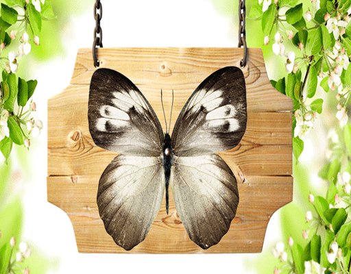
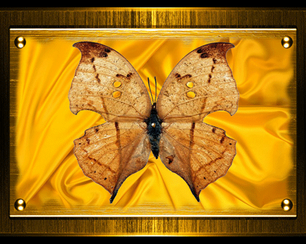
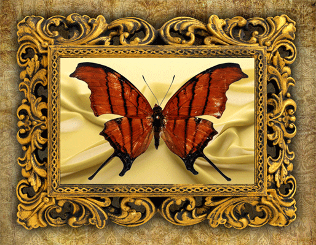
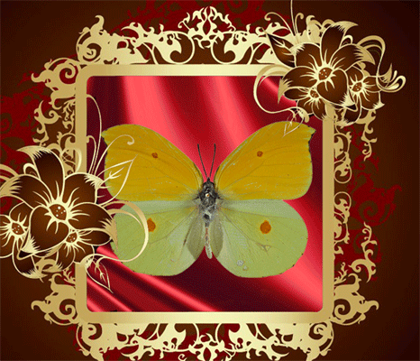
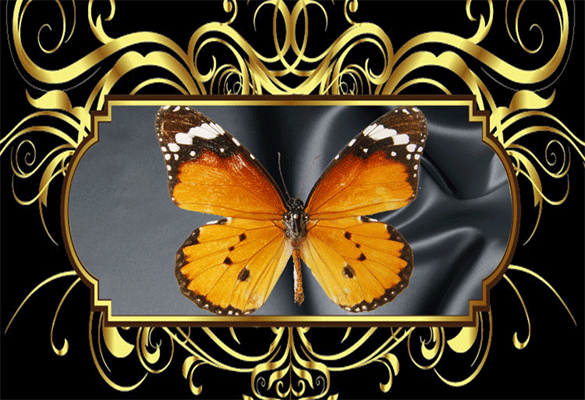
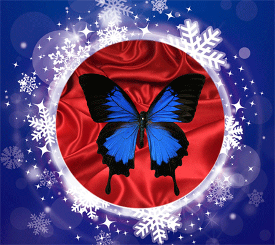
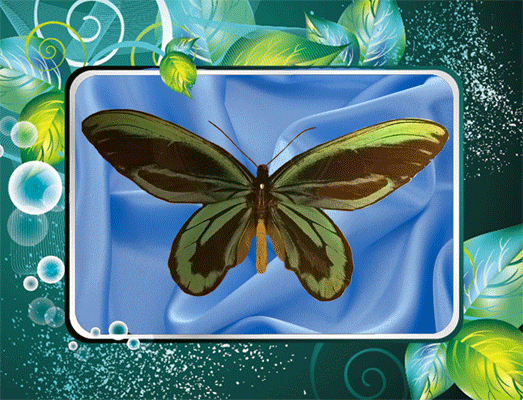
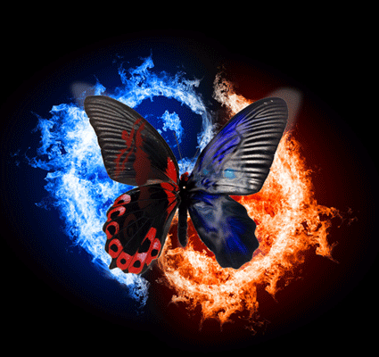
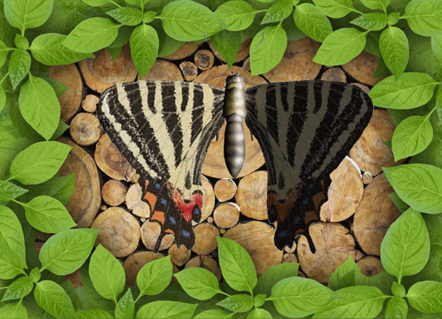

No selected
-
纹白蝶
所属类别：鳞翅目 粉蝶科
虫体大小：翅展42--54mm
分布区域：世界广布种
简要介绍：翅面和脉纹白色。前翅顶角中部有2个黑色斑纹，后翅前缘有1黑斑。翅基部和前翅前缘色暗，雌蝶又明显深于雄蝶。 -
枯叶蝶
所属类别：昆虫纲 蛱蝶科
展翅 78 - 100 mm
习性：多停在树干或有落叶的地面，不见访花。飞翔高而迅速。
简要介绍：雌雄外观近似但雄蝶翅腹面颜色较深，雌蝶翅色较淡，翅端较雄蝶尖锐外弯。 -
金线蝶
所属类别：昆虫纲 凤蝶科
翅展：80-100mm
分布区域：南美洲
简要介绍：翅面纹络呈金色，翅基部和前翅前缘色暗，雌蝶又明显深于雄蝶。 -
光明女神蝶

所属类别：昆虫纲 闪蝶科
地位：世界最知名蝴蝶之一
形态特征：美丽而梦幻般的蝴蝶，整个翅面犹如蔚蓝的大海上涌起朵朵白色的浪花，其颜色及花纹非常壮观，被誉为世界上最美丽的蝴蝶。 -
红点粉蝶
所属类别：粉蝶科 鳞翅目
翅展：55～65mm。
生态习性：成虫出现于春、夏二季，生活在低、中海拔山区。喜访花。
形态特征：翅膀单纯黄色；各翅中央有1个褐色斑点。 -
黑脉金斑蝶
翅展：8.9-10.2厘米
形态特征：翅膀上面呈黄褐橙色，翅脉及边缘黑色，边缘有两串细白点。前翅近端位有一些橙点。翅膀下面很相似，但前翅及后翅端呈黄褐色，而白点较大。 -
蓝凤蝶
所属类别：鳞翅目 凤蝶科
分布：华西、华南、海南、贵州。
形态特征：翅黑色，有靛蓝色天鹅绒光泽。雄蝶后翅正面前缘有黄白色斑纹，臀角有外围红环的黑斑；后翅反面外缘有几个弧形红斑，臀角具3个红斑。 -
鸟翼蝶
分布：从马六甲到巴布亚新几内亚、所罗门群岛和澳大利亚北部。
昆虫特点：雄蝶背面有黑和绿色的鲜明图案；前翅的腹面呈黑色，中央为绿松石色，覆以黑色脉纹。 -
鬼美人蝶
传说中的卡申夫鬼美人凤蝶，一只价值25万美元，但捕捉者全部离奇死亡，惨不忍睹。卡申夫在云南一个神秘的山谷中发现了一种极其诡异的蝴蝶——左右两边翅膀图案不一样，左边是美女，右边是骷髅，合在一起就是‘鬼美人’！
-
粉蝶
分布全球
体态较小